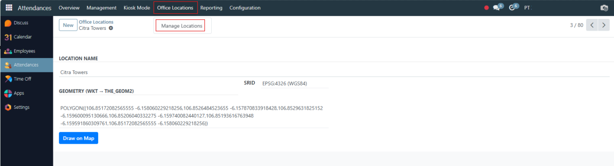
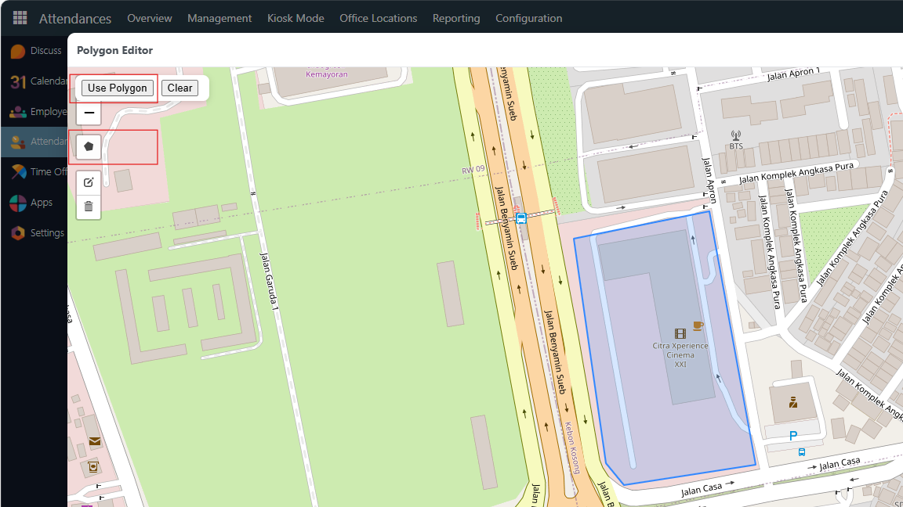
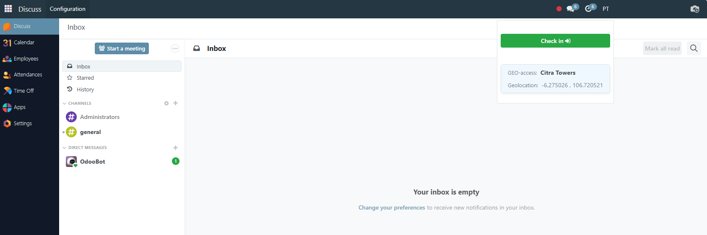
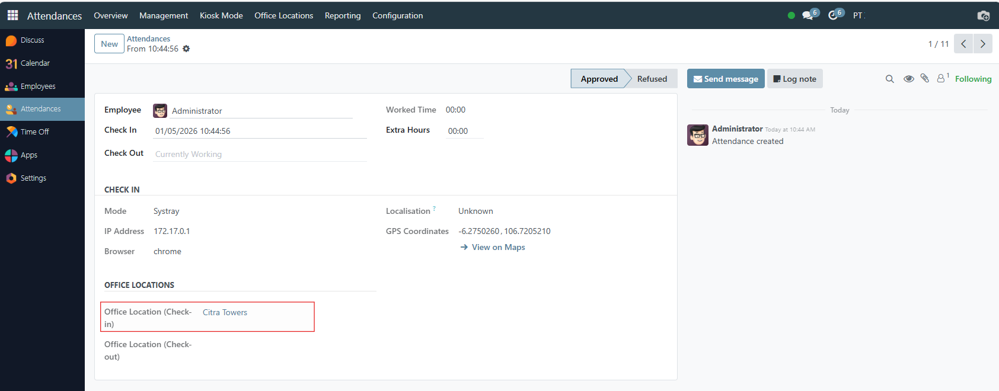

Polygon-based office validation & attendance protection for Odoo 18
Paid App • OPL-1 License
Office polygons (WKT)
GPS validation
Check-in/out loading UX
Cache guard
What this module does
HR Attendance Control helps you ensure employees can only check in/out from approved office areas
using polygon-based locations (WKT) and GPS coordinates. It also provides UX and control patches
around the attendance flow to reduce mistakes and improve reliability.
Main features
Office Location model to maintain one or more office areas using polygon WKT.
Polygon validation to ensure check-in/out happens within allowed office area(s).
Attendance protection hooks to avoid duplicate attendance records (when used with daily-limit logic).
Loading indicator on check-in/out to prevent double-click / repeated submissions.
Map/WKT helper tools to simplify polygon editing and troubleshooting.
Screenshots

Office polygons: manage allowed work areas.

Validate check-in/out against office polygons.

Map & WKT utilities for quicker setup and debugging.

Improved attendance UX with loading indicator / guard.
Support
Need help with installation, configuration, or customization?
Contact support@apodoolabs.com.